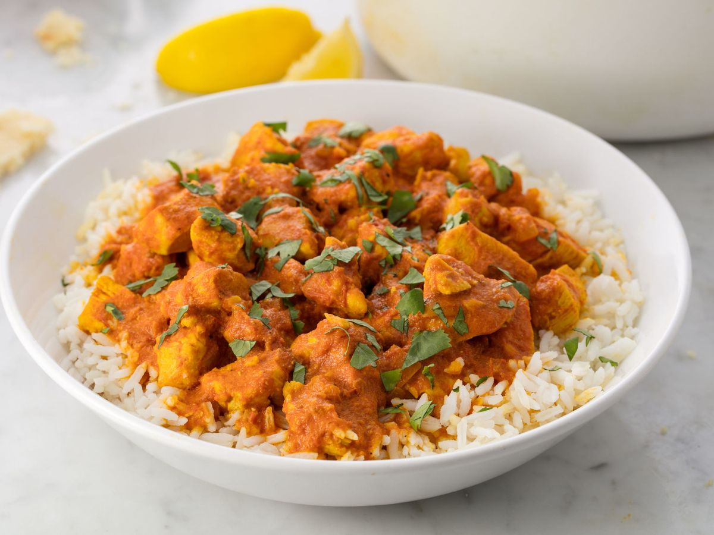

400ml toidukoor
karri maitseaine
200g riisi
1 paprika
Soola ja pipart maitse järgi
Õli
Haki kanafilee ning pane pannile praadima. Maitsesta soola-pipraga.
Haki paprika ning lisa pannile.
Kui kana on küpsenud, lisa pannile koor.
Lisa 2 tl karri maitseainet ning maitse järgi soola-pipart.
Serveeri!
Hind: 6 eurot | Portsjonid: 4 | Hind portsjoni kohta: 1.5eur | Valmistusaeg: 30min
Koostisosad:
500g kanafilee400ml toidukoor
karri maitseaine
200g riisi
1 paprika
Soola ja pipart maitse järgi
Õli
Valmistamise juhised:
Pane riis keema.Haki kanafilee ning pane pannile praadima. Maitsesta soola-pipraga.
Haki paprika ning lisa pannile.
Kui kana on küpsenud, lisa pannile koor.
Lisa 2 tl karri maitseainet ning maitse järgi soola-pipart.
Serveeri!